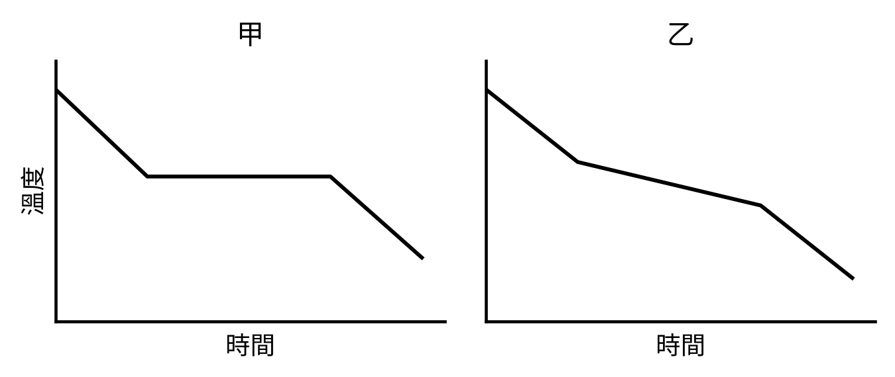
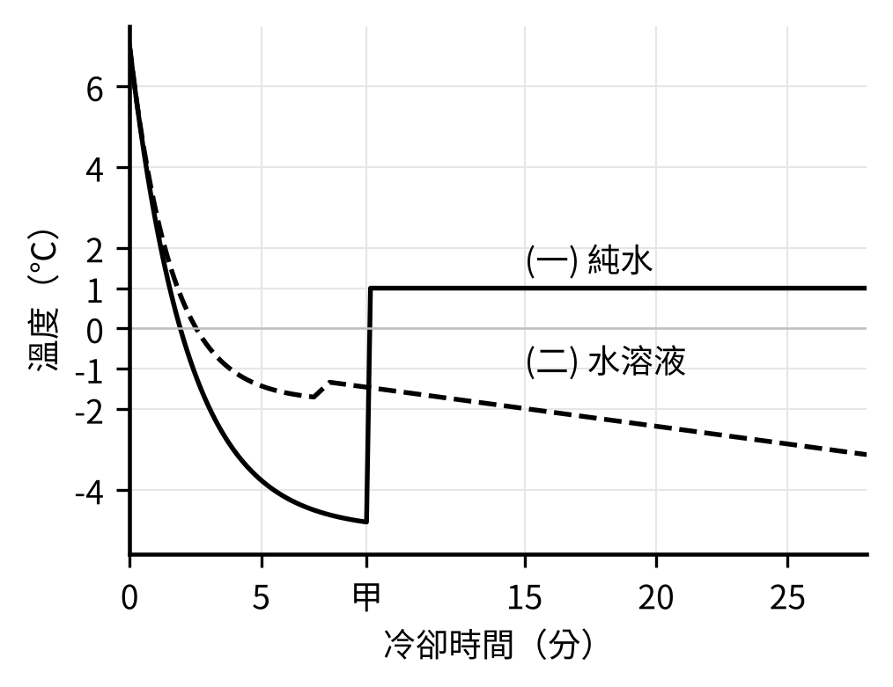
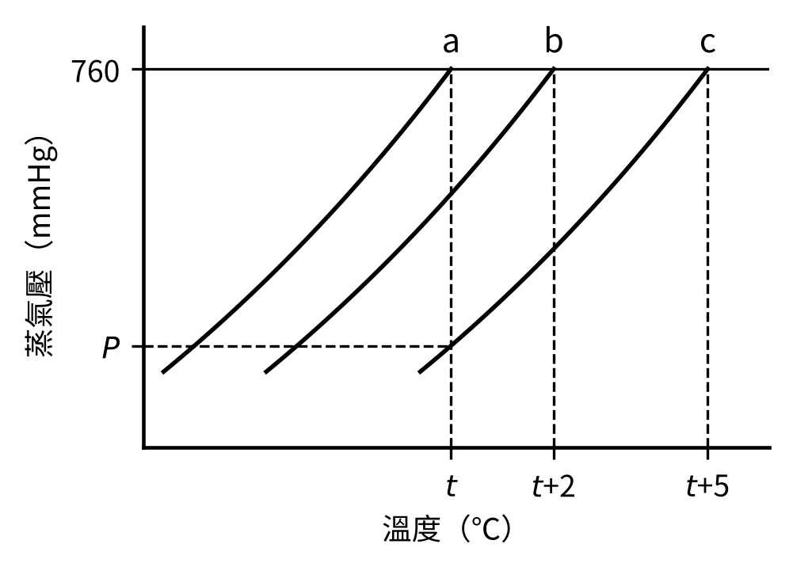

基礎題
下列有關溶液依數性質的陳述，哪些正確？（Kb表莫耳沸點上升常數、Kf表莫耳凝固點下降常數）（多選）
- (A) Kf及Kb隨溶劑種類而變
- (B) Kf及Kb不隨溶質種類而變
- (C) 通常同一溶劑的Kf＞Kb
- (D) 拉午耳定律可用於稀薄溶液或理想溶液
- (E) 理想溶液的分子間沒有作用力
看答案與詳解
答案：(A)(B)(C)(D)
(B) ✔ 與溶質種類、濃度無關。
(C) ✔ 一般溶劑 Kf＞Kb（如水 1.86＞0.52）。
(D) ✔ 拉午耳定律適用於理想溶液，稀薄溶液可近似適用。
(E) ✘ 理想溶液是「溶質－溶劑間作用力與原來相近」，不是沒有作用力。
一非電解質均可溶於下列四種溶劑，欲以凝固點下降法測定其分子量，以何種溶劑最佳？
- (A) 水（Kf＝1.86）
- (B) 苯（Kf＝5.12）
- (C) 樟腦（Kf＝39.7）
- (D) 氯仿（Kf＝4.86）
看答案與詳解
答案：(C)
樟腦 Kf 最大 → 選 (C)。
若水溶液中的溶質為非揮發性非電解質，下列敘述哪些正確？（多選）
- (A) 溶液的蒸氣壓較水的蒸氣壓低
- (B) 蒸氣壓愈低者沸點愈低
- (C) 沸點愈高的溶液其凝固點愈低
- (D) 重量莫耳濃度相同者，沸點亦相同
- (E) 同溫時，重量莫耳濃度相同者，蒸氣壓相同
看答案與詳解
答案：(A)(C)(D)(E)
(B) ✘ 蒸氣壓愈低，要加熱到更高溫才達 1 atm，沸點愈高。
(C) ✔ 沸點高 → Cm 大 → 凝固點下降多。
(D) ✔ ΔTb＝KbCm，與溶質種類無關。
(E) ✔ 溶劑同為水，Cm 相同 → 溶質莫耳分率相同 → 同溫時蒸氣壓相同。
將 1.00 克尿素溶於 75.0 克水中，所成溶液的沸點為 100.114℃。尿素分子量為 60.06，則水的 Kb 為若干 ℃／m？
- (A) 0.530
- (B) 0.520
- (C) 0.513
- (D) 0.522
看答案與詳解
答案：(C)
Kb＝ΔTb／Cm＝0.114／0.2220≒0.514℃／m，最接近 0.513 → (C)
100 g 水中溶有尿素 10 g、蔗糖 20 g，則此溶液的沸點約為（水的 Kb＝0.52℃／m；尿素＝60，蔗糖＝342）
- (A) 100.2℃
- (B) 101.2℃
- (C) 101.4℃
- (D) 102.2℃
- (E) 104.6℃
看答案與詳解
答案：(B)
Cm＝(10／60＋20／342)／0.100＝(0.167＋0.058)／0.100＝2.25 m
ΔTb＝0.52×2.25＝1.17℃ → 沸點≒101.2℃ → (B)
某不揮發性非電解質 2.50 g 溶於 100 g 水中，溶液的凝固點為 −0.78℃，則此溶質的分子量最接近（水的 Kf＝1.86℃／m）
- (A) 30
- (B) 40
- (C) 50
- (D) 60
- (E) 70
看答案與詳解
答案：(D)
M＝2.50／(0.419×0.100)＝59.6 ≒ 60 → (D)
若一杯葡萄糖水溶液與另一杯蔗糖水溶液的凝固點恰好相同，則兩溶液的下列哪些項目也應相同？（多選）
- (A) 重量百分率濃度
- (B) 重量莫耳濃度
- (C) 溶質的莫耳分率
- (D) 沸點
- (E) 同溫時溶液的蒸氣壓
看答案與詳解
答案：(B)(C)(D)(E)
(A) ✘ 分子量不同，同 Cm 時重量百分率不同（蔗糖較大）。
(B) ✔
(C) ✔ 每 1 kg 水含相同莫耳數溶質 → 莫耳分率相同。
(D) ✔ ΔTb＝KbCm 相同。
(E) ✔ 溶劑莫耳分率相同 → 蒸氣壓相同。
▲ 第 5-08～5-09 題為題組：水 100 克中溶解 1.8 克的 C6H12O6 與 1.84 克的 C3H5(OH)3（水的 Kb＝0.52℃／m，Kf＝1.86℃／m）。
在 1 大氣壓下，此溶液的沸點約為
- (A) 100.16℃
- (B) 0.15℃
- (C) 100.23℃
- (D) 100.51℃
看答案與詳解
答案：(A)
Cm＝0.030／0.100＝0.30 m
ΔTb＝0.52×0.30＝0.156℃ → 沸點≒100.16℃ → (A)
承上題，在 1 大氣壓下，此溶液的凝固點約為
- (A) −0.56℃
- (B) −0.45℃
- (C) −0.32℃
- (D) −0.16℃
看答案與詳解
答案：(A)
乙二醇（CH2OHCH2OH）是一種抗凍劑。若要使 6.00 公斤的水在 −3.72℃ 時不凍結，則至少需要加入若干克乙二醇？（水的 Kf＝1.86℃／m；乙二醇＝62）
(1) 溶液的重量莫耳濃度至少為多少？
(2) 至少需加入乙二醇若干克？
看答案與詳解
答案：(1) 2.00 m (2) 744 g
(2) n＝2.00×6.00＝12.0 mol → 12.0×62＝744 g
酒精 100 克中含有 0.7208 克某酚化合物（分子量為 144.16），測得其沸點上升度數為 0.061℃。
(1) 此溶液的重量莫耳濃度為多少？
(2) 酒精的 Kb 為若干 ℃／m？
看答案與詳解
答案：(1) 0.0500 m (2) 1.22℃／m
(2) Kb＝0.061／0.0500＝1.22℃／m
進階題
下列哪些物質在一大氣壓下愈煮，沸點會愈高？（多選）
- (A) 苯
- (B) 水
- (C) 酒精水溶液
- (D) 純硫酸
- (E) 硝酸銀水溶液
看答案與詳解
答案：(C)(E)
(C) ✔ 酒精比水易揮發，愈煮酒精愈少，沸點逐漸升高並趨近 100℃。
(E) ✔ 非揮發性溶質，水蒸發後溶液變濃，沸點上升。
某生由實驗測得下列物質的熔點：(甲) 純樟腦熔點為 179℃；(乙) 純 C10H8（分子量 128）熔點 80℃；(丙) 純 BHC（C6H6Cl6，分子量 291）熔點 112℃；(丁) 1% C10H8 的樟腦溶液熔點為 t1℃；(戊) 1% BHC 的樟腦溶液熔點為 t2℃。則
- (A) 179＞t1＞t2
- (B) 179＞t1＝t2
- (C) 179＞t2＞t1
- (D) t1＞t2＞179
- (E) t2＞t1＞179
看答案與詳解
答案：(C)
同為 1%，溶質分子量愈小 → Cm 愈大 → 下降愈多。
C10H8（128）＜BHC（291）→ t1 降得較多 → 179＞t2＞t1 → (C)
某有機化合物為非揮發性、非電解質，實驗式為 CH2O，其 1% 水溶液的凝固點為 −0.104℃，則該有機化合物的分子式為（水的 Kf＝1.86℃／m）
- (A) C5H10O
- (B) C6H12O6
- (C) C3H6O3
- (D) CH2O
看答案與詳解
答案：(B)
Cm＝0.104／1.86＝0.0559 m → n＝0.0559×0.099＝5.53×10−3 mol
M＝1／5.53×10−3≒181 → (CH2O)n，30n＝180，n＝6 → C6H12O6 → (B)
（原題印 Kb＝1.86，應為 Kf。）
某含碳、氫、氧的化合物 1.00 g 完全燃燒後，得二氧化碳 1.47 g 及水 0.600 g。當 0.500 g 此化合物溶於 50.0 g 苯中，凝固點下降 0.848℃，則此化合物的分子式為何？（苯的 Kf＝5.12℃／m）
- (A) CH3O
- (B) C3H6O2
- (C) C2H4O2
- (D) C2H6O2
看答案與詳解
答案：(C)
莫耳比 C：H：O＝0.0334：0.0667：0.0333＝1：2：1 → 實驗式 CH2O（30）
Cm＝0.848／5.12＝0.166 m → n＝0.166×0.0500＝8.28×10−3 mol → M＝0.500／8.28×10−3≒60
60／30＝2 → C2H4O2 → (C)
某 10% 的非揮發性非電解質水溶液於 −0.93℃ 凝固，則下列哪些敘述正確？（水的 Kb＝0.52℃／m，Kf＝1.86℃／m）（多選）
- (A) 溶液的沸點為 100.26℃
- (B) 該非電解質的分子量為 111
- (C) 該溶液的重量莫耳濃度為 0.5 m
- (D) 溶質的莫耳分率為 1／112
- (E) 該溶質對水的溶解度為 10 g／100 g 水
看答案與詳解
答案：(A)(C)(D)
(A) ✔ ΔTb＝0.52×0.50＝0.26℃
(B) ✘ 取 100 g 溶液：溶質 10 g、水 90 g → n＝0.50×0.090＝0.045 mol → M＝10／0.045≒222
(C) ✔
(D) ✔ x＝0.045／(0.045＋90／18)＝0.045／5.045≒1／112
(E) ✘ 題目沒說是飽和溶液，無法得知溶解度。
加熱 0.20 M NaBr(aq) 至沸騰，下列敘述哪些正確？（多選）
- (A) 當溶液的蒸氣壓升至與大氣壓相等時，溶液才開始沸騰
- (B) 繼續加熱維持沸騰，溫度將保持一定
- (C) 沸騰出來的氣體冷凝，其濃度將稍低於 0.20 M
- (D) 此溶液中若再加少許 NaBr(s)，其沸點將比原溶液更高
- (E) 溶液沸騰後，蒸氣壓即不隨加熱時間增長而升高
看答案與詳解
答案：(A)(D)(E)
(B) ✘ 水不斷蒸發，溶液變濃，沸點持續上升。
(C) ✘ NaBr 不揮發，冷凝液是純水（0 M）。
(D) ✔ 粒子濃度變大，沸點上升更多。
(E) ✔ 沸騰時蒸氣壓恆等於外界大氣壓。
關於 ΔTb＝Kb．Cm 這個關係式，下列敘述哪些正確？（多選）
- (A) 此式適用於任何濃度的溶液
- (B) 此式適用於任何種類的溶質
- (C) Kb 值的大小與溶劑的性質有關
- (D) 若原子量的標準變大，則某溶液的 Kb 值變小
- (E) Kb 值的大小與溶液的濃度無關
看答案與詳解
答案：(C)(E)
(B) ✘ 只適用於非揮發性、非電解質溶質；電解質要乘 i。
(C) ✔ Kb 是溶劑的特性常數。
(D) ✘ 原子量標準變大 → 同質量溶質的莫耳數變少，Cm 變小，但 ΔTb 是實測值不變 → Kb 變大。
(E) ✔ Kb 由溶劑決定，與濃度無關。
蔗糖在某溫度的飽和溶液，用水稀釋至 10 倍（溶液重量），在 1 atm 下測得凝固點為 −0.372℃，則蔗糖在此溫度的溶解度（g／100 g 水）最接近下列何值？（已知水 100 g 溶有葡萄糖 3.6 g 所成溶液的凝固點為 −0.372℃；蔗糖＝342）
- (A) 178
- (B) 100
- (C) 215
- (D) 250
看答案與詳解
答案：(A)
設飽和時每 100 g 水溶 x g 蔗糖，飽和溶液 (100＋x) g，稀釋後總重 10(100＋x) g，其中水＝1000＋9x g：
(x／342)／[(1000＋9x)／1000]＝0.2 → x≒178 → (A)
附圖為常溫下甲、乙兩物質由液態冷卻至固態的冷卻曲線。有關兩物質的敘述，下列何者正確？

- (A) 甲為化合物、乙為元素
- (B) 甲乙均有固定的熔點
- (C) 甲為純物質、乙為混合物
- (D) 甲為混合物、乙為元素
- (E) 甲乙均為元素
看答案與詳解
答案：(C)
甲為純物質、乙為混合物 → (C)。（只看冷卻曲線無法分辨元素或化合物，所以 (A)(D)(E) 都不能選；乙沒有固定熔點，(B) ✘。）
大考／素養題
水溶液的沸點與其所含溶質的性質及其濃度有關。試問濃度均為 1.0 m 的葡萄糖、果糖及蔗糖水溶液，三者沸點高低順序符合下列哪一項敘述？
- (A) 葡萄糖溶液＞果糖溶液＞蔗糖溶液
- (B) 蔗糖溶液＞葡萄糖溶液＞果糖溶液
- (C) 蔗糖溶液＞葡萄糖溶液＝果糖溶液
- (D) 葡萄糖溶液＞果糖溶液＝蔗糖溶液
- (E) 葡萄糖溶液＝果糖溶液＝蔗糖溶液
看答案與詳解
答案：(E)
濃度同為 1.0 m → 沸點相同 → (E)
分子式為 C3H8O 的有機物有三個，若欲在普通的高中化學實驗室，做實驗來推測該物質是什麼有機物，則下列哪一種方法最方便而有效？
- (A) 測沸點後查資料
- (B) 測熔點後查資料
- (C) 測滲透壓
- (D) 用沸點上升法
- (E) 用凝固點下降法
看答案與詳解
答案：(A)
三者常溫下不是固體，熔點很低，一般實驗室難測 → (B) ✘。
三者沸點差異大，測沸點再查資料最方便 → (A)。
藉由凝固點下降實驗以推求尿素的分子量，實驗數據如下：蒸餾水 100 mL，尿素 (NH2)2CO 質量為 6.00 g。純水與尿素水溶液的冷卻曲線如附圖，下列敘述哪些正確？（水的 Kf＝1.86℃／m）（多選）

- (A) 裝有尿素水溶液的試管需先置於一大試管中，再置入冷劑中，目的是不直接與冷劑接觸，使冷卻較均勻且降溫速率較慢
- (B) 圖中的甲處為圖形最低點，此點的溫度為水溶液的凝固點
- (C) 凝固點下降度數為 1℃
- (D) 尿素分子量的實驗值為 63.8
- (E) 尿素分子量實驗值與理論值的相對誤差百分比（｜實驗值－理論值｜／理論值×100%）為 7%
看答案與詳解
答案：(A)(E)
ΔTf＝1.0−(−1.0)＝2.0℃
(A) ✔ 空氣套管使降溫緩慢均勻，減少過冷。
(B) ✘ 甲處是純水過冷的最低點，不是凝固點；水溶液的凝固點要用斜線外插判讀（約 −1.0℃）。
(C) ✘ 2.0℃。
(D) ✘ 2.0＝1.86×(6.00／M)／0.100 → M＝55.8
(E) ✔ ｜55.8−60｜／60×100%＝7.0%
若 a 為純溶劑，b 和 c 是在 a 溶劑中溶有非電解質及非揮發性溶質的溶液，溶液成分：溶液 b 為溶質 15 g 溶於溶劑 500 g；溶液 c 為溶質 0.10 mol 溶於溶劑 100 g。a、b、c 的蒸氣壓－溫度曲線如下圖：

(1) 求溶液 b 中溶質的分子量。
(2) 若溶劑分子量為 80 g／mol，則 P 點壓力為若干 mmHg？
看答案與詳解
答案：(1) 75 g／mol (2) 704 mmHg
(1) c：Cm＝0.10／0.100＝1.0 m，Kb＝5／1.0＝5℃／m
b：Cm＝2／5＝0.40 m → n＝0.40×0.500＝0.20 mol → M＝15／0.20＝75 g／mol
(2) P 點是溶液 c 在 t℃ 的蒸氣壓，而純溶劑在 t℃ 的蒸氣壓＝760 mmHg。
n溶劑＝100／80＝1.25 mol → P＝760×1.25／(1.25＋0.10)≒704 mmHg
（水的 Kb＝0.52℃／m；葡萄糖＝180）
(1) 多少克葡萄糖溶於 100 g 水中，溶液的沸點為 100.20℃？
(2) 若此水溶液繼續沸騰至沸點變為 100.60℃，此時溶液的重量百分率濃度為若干？
看答案與詳解
答案：(1) 6.9 g (2) 17.2%
(2) 沸騰只蒸發水：Cm＝0.60／0.52＝1.154 m → 剩下水＝0.0385／1.154＝0.0333 kg＝33.3 g
重量百分率＝6.92／(6.92＋33.3)×100%≒17.2%
某組學生做「凝固點下降的測定」實驗：將 0.30 克萘溶於 15 mL 環己烷中。查表得環己烷密度 0.78 g／mL、凝固點 6.45℃、Kf＝20℃／m。實驗測得溶液的凝固點為 2.05℃。之後又查得萘的分子式為 C10H8。
(1) 由實驗數據計算萘的分子量。
(2) 依萘的真正分子量，所配溶液的重量莫耳濃度為何？
(3) 此次實驗所求分子量的誤差百分率為何？
看答案與詳解
答案：(1) 117 (2) 0.200 m (3) −8.9%
(1) ΔTf＝6.45−2.05＝4.40℃ → Cm＝4.40／20＝0.220 m
M＝0.30／(0.220×0.0117)≒116.6≒117
(2) (0.30／128)／0.0117＝0.200 m
(3) (116.6−128)／128×100%≒−8.9%（偏低 8.9%）
在溶液凝固點下降的測定實驗中，選用環己烷作溶劑，分成三組進行實驗，數據如下：第一組：化合物 A 1.92 克溶於 100 克環己烷，溶液凝固點 3.4℃；第二組：樟腦 1.52 克溶於 100 克環己烷，溶液凝固點 4.4℃；第三組：碘 1.91 克溶於 100 克環己烷，溶液凝固點 4.9℃（分子量：環己烷 84，A 128，樟腦 152，碘 254）
(1) 求 A 溶液的重量莫耳濃度。
(2) 以重量莫耳濃度為橫軸、溶液凝固點為縱軸作圖，由圖求環己烷的正常凝固點。
(3) 求環己烷的凝固點下降常數 Kf。
看答案與詳解
答案：(1) 0.15 m (2) 6.4℃ (3) 20℃／m
(2) 三點 (0.075, 4.9)、(0.10, 4.4)、(0.15, 3.4) 成一直線，斜率＝(4.4−3.4)／(0.10−0.15)＝−20
外插到 Cm＝0：3.4＋20×0.15＝6.4℃
(3) Kf＝斜率的絕對值＝20℃／m
（原題第 (2)(3) 小題為在方格紙作圖並標示，此處合併改寫。）
已知苯的沸點為 80.3℃，凝固點為 5.5℃，Kf 為 5.0℃／m，Kb 為 2.70℃／m，25℃ 時純苯的飽和蒸氣壓為 94.0 mmHg。今在 15.6 g 苯中溶解 1.00 g 某不揮發性非電解質後，測得溶液的蒸氣壓為 89.3 mmHg（苯分子量＝78）。
(1) 溶液中溶質的莫耳分率
(2) 溶液的重量莫耳濃度
(3) 溶質的分子量
(4) 溶液的凝固點
(5) 溶液的沸點
看答案與詳解
答案：(1) 0.05 (2) 0.675 m (3) 95 (4) 2.13℃ (5) 82.1℃
(2) n苯＝15.6／78＝0.200 mol → n溶質＝0.050×0.200／0.950＝0.01053 mol
Cm＝0.01053／0.0156＝0.675 m
(3) M＝1.00／0.01053＝95
(4) 5.5−5.0×0.675＝2.13℃
(5) 80.3＋2.70×0.675＝82.1℃